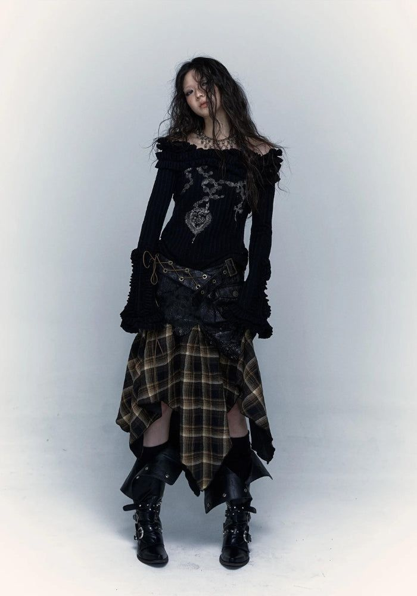
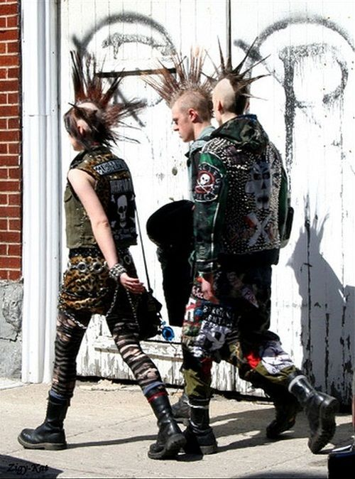
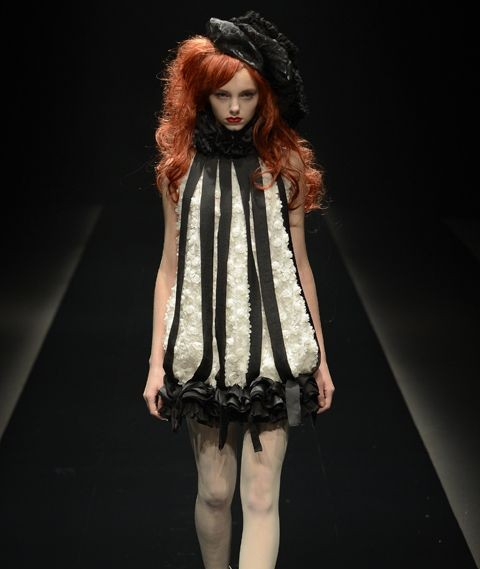
ALTERNATIVE FASHION OR ALT FASHION IS FASHION THAT STANDS APART FROM MAINSTREAM, COMMERCIAL FASHION. IT INCLUDES BOTH STYLES WHICH DO NOT CONFORM TO THE MAINSTREAM FASHION OF THEIR TIME AND THE STYLES OF SPECIFIC SUBCULTURES (SUCH AS EMO, GOTH, HIP HOP AND PUNK). SOME ALTERNATIVE FASHION STYLES ARE ATTENTION-GRABBING AND MORE ARTISTIC THAN PRACTICAL (GOTH, STEAMPUNK, CYBERPUNK), WHILE SOME DEVELOP FROM ANTI-FASHION SENTIMENTS THAT FOCUS ON SIMPLICITY AND UTILITARIANISM (GRUNGE, ROCKER, SKINHEAD).
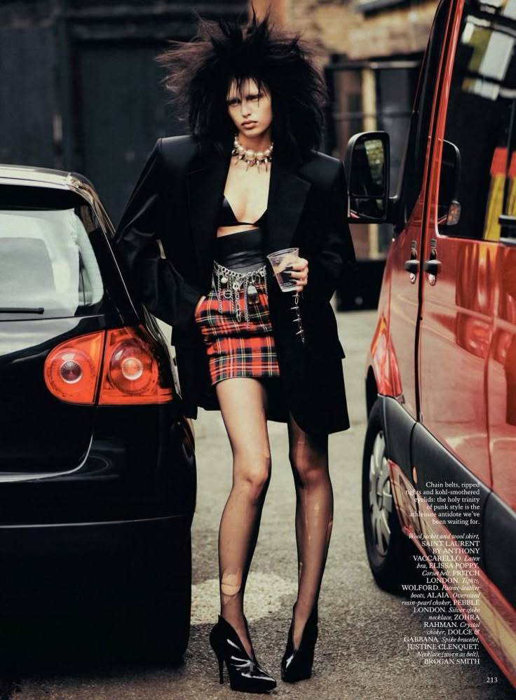
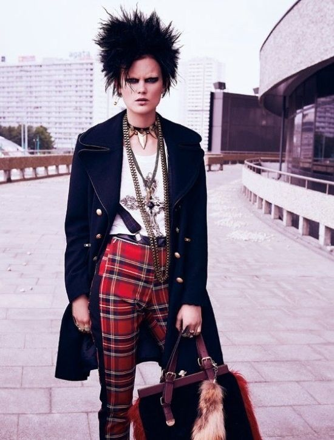
Alternative fashion is often considered a modern concept but it, and the concept of subculture, it is often related to, have existed for centuries. As researched in Hodkinson's exploration of the history of alternative dress patterns in Western society, subcultures - cultural, social, religious and artistic groups, alternative fashion has often been used to identify, and even stereotype, members of groups with value systems that diverged from common culture. The use of subcultural terminology in the 21st century to categorize an array of dress styles into distinct subcultures, as of the same does not provide a complete picture of the individual being assessed by their "look," due to the common evolution in the meaning, relevance and definition of certain subcultures and even the term "subculture" itself. Alternative fashion is often looked at through the lens of social politics - it is considered a visual expression of opposition to societal norms, that heavily associated with the idealism, energy and rebellion of youth culture.
However, sociological studies into exploring alternative fashion have found individuals who resisted social daily uncommon modes of dress as a permanent post-adolescence choice. Alternative fashion generally by shows a challenge to accepted norms. Though the reasons relevant to women of alternative clothing style choices are as broad and connections style groups can be as diverse as the women themselves. It can be a visual language that people deploy to communicate with each other, indicating common interests or involvement with similar activities, a challenge to modern perceptions of aesthetic beauty and/or a basic form of self-expression like painting or writing.
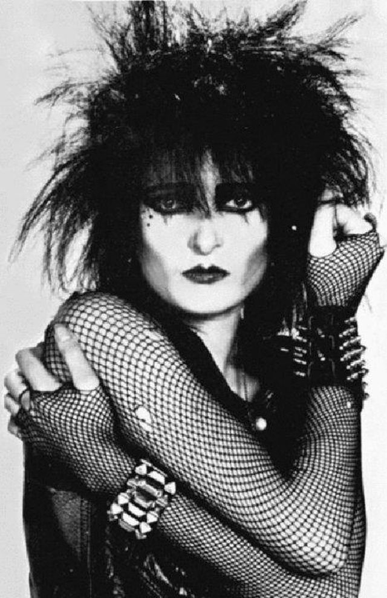
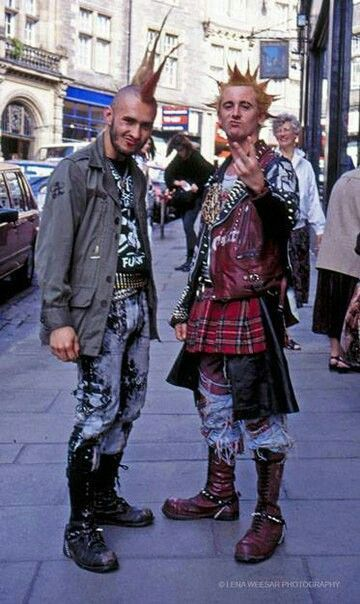
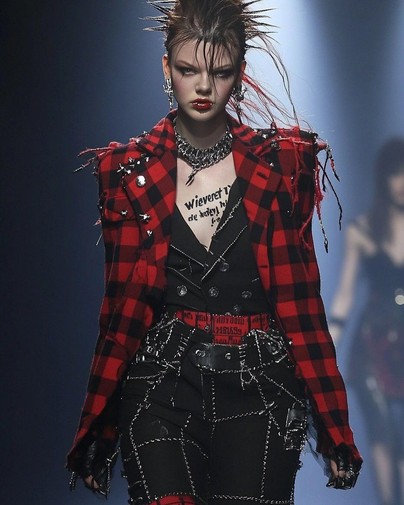
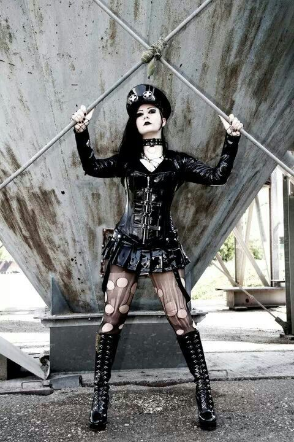
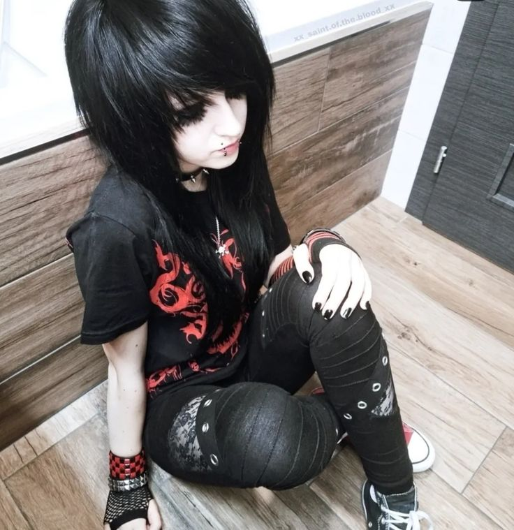
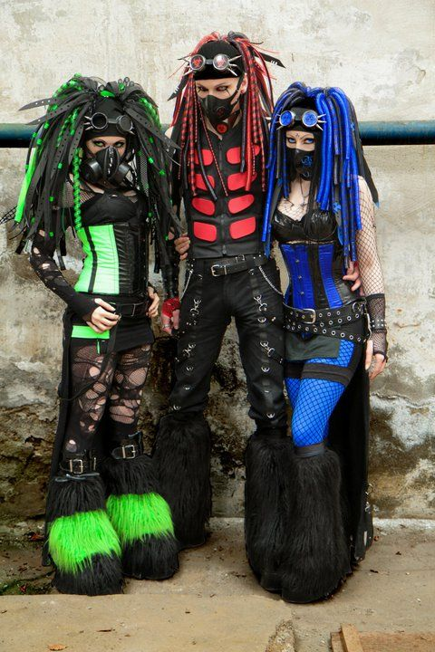
Embracing Individuality and Self-Expression
Despite the distinct subcultures within alternative fashion, there is a shared ethos of inclusivity and acceptance of diversity. These communities embrace individuals from various backgrounds, genders, and orientations, united by a common appreciation for self-expression and individuality.Alternative fashion transcends traditional societal boundaries, providing a safe space for individuals to explore and embrace their authentic selves without fear of judgment or discrimination.
While alternative fashion celebrates individuality, it is not without its challenges and misconceptions. Many individuals within these subcultures face societal scrutiny and stereotyping, often being labelled as “outcasts” or “freaks.” However, these communities remain resilient, using their fashion choices as a means of defiance and empowerment. Additionally, the commercialization of certain alternative fashion styles has led to debates around authenticity and co-option. Some argue that the mainstreaming of these once-niche subcultures dilutes their original meaning and significance.